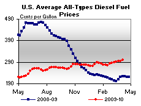

Released on April 7, 2010
(Next Release on April 14, 2010)
The Outlook for Transportation-Fuel Markets This Summer
On April 6, EIA released the April 2010 Short-Term Energy and Summer Fuels Outlook (Outlook) that includes a detailed look at the forecast for transportation fuels during the upcoming summer (April through September). Regular-grade gasoline retail prices, which averaged $2.44 per gallon last summer, are projected to average $2.92 per gallon during the current driving season. The monthly average gasoline price is expected to peak at about $2.97 per gallon in early summer. Average U.S. pump prices likely will exceed $3 per gallon at times during the forthcoming spring and summer driving season. Diesel fuel prices, which averaged $2.46 per gallon last summer, are projected to average $2.97 this summer. However, because short-term prices can be quite volatile, weekly prices will differ from the monthly average.
Because taxes and retail distribution costs are generally stable, movements in gasoline and diesel prices are driven primarily by changes in crude oil prices and wholesale margins. As always, these energy price forecasts are highly uncertain, as both recent experience and the sizable participation in near-term futures options contracts (with a wide range of strike prices) clearly demonstrate that prices can move within a wide range in a relatively short period. For example, the lower and upper limits for the 95-percent confidence interval for June 2010 futures contracts were $68 and $101 per barrel, respectively (see the Outlook’s discussion of Energy Price Volatility and Forecast Uncertainty ). Realized crude oil prices that differ from our forecast would likely be reflected in the price of motor fuels, with each dollar-per-barrel sustained difference in crude oil prices relative to the forecast translating into approximately a 2.4-cent-per-gallon change in prices, absent consideration of factors specific to the markets for gasoline and diesel fuel.
Retail price projections reflect higher prices for the refiner acquisition cost of crude oil, expected to average about $79 per barrel ($1.88 per gallon) this summer, compared with the $62 per barrel ($1.47 per gallon) average of last summer. Wholesale gasoline margins (the difference between the wholesale price of gasoline and the refiner acquisition cost of crude oil) are expected to average 43 cents per gallon this summer, up 5 cents per gallon from last summer but lower than the 5-year average of 53 cents per gallon. Similarly, wholesale diesel margins are projected to be higher this summer (33 cents per gallon) than last summer (25 cents per gallon) because of the expected worldwide recovery in distillate markets.
EIA is projecting a slight increase in gasoline consumption, which is the result of two counter-balancing forces: somewhat higher retail gasoline prices (driving demand down) and economic growth (driving demand up). As consumers respond to these factors, we project that motor gasoline consumption will increase by over 40,000 barrels per day (bbl/d) during the summer driving season, about a 0.5-percent increase over last summer. At the same time, distillate fuel consumption—which is affected more strongly by the ongoing economic recovery (particularly in industrial output and foreign trade)—is expected to increase by about 70,000 bbl/d or about 2.1 percent from last summer’s average, in spite of higher prices.
Refinery production of gasoline will be under considerable downward pressure from growth in fuel ethanol blending and the current high level of gasoline and distillate inventories. EIA expects refinery utilization rates will average 84.1 percent, slightly lower than the 84.2 percent average of the previous summer and the lowest since the summer of 1985, reflecting the continued general weakness in domestic petroleum product demand. We expect motor gasoline yields (the percent of finished gasoline production from crude oil and unfinished oils) will average 51.3 percent (including blending components), down slightly from 51.8 percent last summer. This summer, our forecast has distillate yields averaging 26.1 percent, the same as last summer’s average.
Fuel ethanol blending into gasoline increased from an average of 645,000 bbl/d during the summer of 2008 to 717,000 bbl/d during the summer of 2009, and is projected to average 816,000 bbl/d this summer, which is about 8.9 percent of total gasoline consumption. The growth in ethanol blending is driven by the Renewable Fuel Standard, which requires an increase in renewable fuels from a total of 10.6 billion gallons in 2009 to 12.3 billion gallons in 2010 (excluding the biomass-based diesel fuel volume requirement). The growth in ethanol consumption is being met primarily by domestic production. EIA expects the month-to-month growth in ethanol plant capacity and production to slow significantly in 2010 as the boom in ethanol plant construction and startups over the last 3 years comes to an end.
Inventories this summer are projected to be ample. At the onset of the summer driving season (April 1) total gasoline stocks, at 224 million barrels, are 7 million barrels above the level of year-ago and 11 million barrels above the most recent 5-year average (2005-2009). Because of the higher current inventory level than last year, EIA projects the average stock draw over the summer will be about 87,000 bbl/d compared with last summer’s 25,000 bbl/d average stock draw and the 5-year average of 55,000 bbl/d. Distillate inventories are projected to start the summer season at 143.1 million barrels, almost matching last year’s record-high 143.6 million barrels, and 24 million barrels higher than the most recent 5-year average. Distillate stocks normally build during the summer season in preparation for winter heating demand. This summer’s projected 15-million-barrel stock build is lower than the average 23–million-barrel build over the five previous summers and the 29-million-barrel build last summer.
In general, this summer calls for modest growth in motor gasoline and distillate fuel markets, reflecting the stimulus of moderate economic growth and the constraining effects of higher crude oil and product prices compared with last summer.
U.S. Average Diesel Price Surpasses $3 a Gallon
The U.S. average price for regular gasoline increased three cents to $2.83 per gallon, $0.79 above last year. Prices rose in all regions of the country, with the increases ranging from less than half a cent to five cents. The average on the East Coast increased nearly two cents to $2.79 per gallon. The price in the Midwest moved up the most, climbing a nickel to $2.80 per gallon. The Gulf Coast average remained the lowest in the Nation at $2.72 per gallon, an increase of more than three cents. The average in the Rocky Mountains rose nearly four cents to $2.83 per gallon. Growing by less than half a cent, prices on the West Coast and in California were essentially unchanged at $3.04 per gallon and $3.09 per gallon, respectively.
The U.S. average price for diesel fuel shot up nearly eight cents, surpassing three dollars a gallon for the first time since early November 2008. At $3.02 per gallon, the price was $0.79 cents above last year at this time. Prices rose sharply in all major regions, with the increases ranging from about seven to almost nine cents. The average on the East Coast went up nearly seven cents to settle at $3.03 per gallon. The Midwest, Gulf Coast, and Rocky Mountain averages all increased nearly eight cents to $2.99 per gallon, $2.98 per gallon, and $3.04 per gallon, respectively. The West Coast price jumped about nine cents to $3.11 per gallon, while the average in California moved up over seven cents to $3.15 per gallon.
Propane Stock Build Gains Momentum
At the start of the traditional build season (April through September), total U.S. inventories of propane surged 2.4 million barrels higher last week to end at 28.0 million barrels. The build was led by the Gulf Coast region, which added 1.0 million barrels of propane stocks. The Midwest region built by 0.8 million barrels and the East Coast region added 0.7 million barrels of propane inventory. The Rocky Mountain/West Coast regional stocks were down slightly. Propylene non-fuel use inventories decreased their share of total propane/propylene stocks from 8.5 percent to 8.4 percent.
Text from the previous editions of “This Week In Petroleum” is now accessible through a link at the top right-hand corner of this page.
| Retail Prices (Cents Per Gallon) | |||||||
|  | |||||||
| Retail Data | Changes From | Retail Data | Changes From | ||||
| 04/05/10 | Week | Year | 04/05/10 | Week | Year | ||
| Gasoline | 282.6 | Diesel Fuel | 301.5 | ||||
| Spot Prices (Cents Per Gallon*) | |||||||||||||||||||||||||||||||||||
|
|||||||||||||||||||||||||||||||||||
| *Note: Crude Oil WTI Price in Dollars per Barrel. Markets closed 4/2/2010. | |||||||||||||||||||||||||||||||||||
| Stocks (Million Barrels) | |||||||
| Stocks Data | Changes From | Stocks Data | Changes From | ||||
| 04/02/10 | Week | Year | 04/02/10 | Week | Year | ||
| Crude Oil | 356.2 | Distillate | 145.7 | ||||
| Gasoline | 222.4 | Propane | 28.039 | ||||